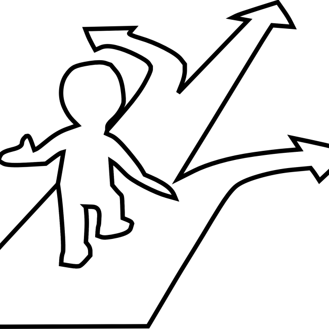

Entreprenadjuridiska domar. Vad kan vi lära oss?
Vad vi kan lära oss av andras misstag.
Entreprenadjuridik och lönsamhet.
Balansgången i entreprenader.
Vilka långsiktigt hållbara konkurrensfördelar finns det i byggbranschen?
Skapa långsiktiga konkurrensfördelar i byggbranschen.

När är det rätt att växa företaget och när ska du sluta?
Tankar om tillväxt och lönsamhet
Kasta budgeten i papperskorgen?
Budgeten - är den nödvändig?
Tvister i byggbranschen. Hur du som entreprenör undviker tvister och skapar långsiktiga kunder.
Hur du skapar långsiktiga kunder som byggentreprenör

Self storage – utvärdering av affärsmodellen. Hur bra är lönsamheten?
En enklare ekonomisk analys av self storage som affärsmodell.
Den bästa skolan för att bli företagare.
Lär dig fortare och undvik katastrofer.
Offentliga ramavtal i byggbranschen - Det långsiktiga affärsperspektivet för mindre företagare.
Hur kan vi tänka kring offentliga ramavtal som mindre företagare.
Vad har privatekonomi och företagande gemensamt?
Konsten att vara både defensiv och offensiv som företagare.

Ett vanligt misstag som företagare gör.
Tänk som en ägare
Har ditt företag problem med lönsamheten?
Hur du skapar vinst som företagsledare.

Skillnaden mellan investerare och företagare.
Företagare bör, till skillnad mot investerare, gå all-in.
Ett enkelt sätt att tänka för att undvika ekonomiska katastrofer.
Sunt förnuft kring risk.
Stress och krishantering. Gör som brandmännen vid 9/11.
Hantera krisen lugnt och metodiskt.

Vad är risk? Hur tar vi riskmedvetna beslut?
Hur vi kan analysera risk och ta riskmedvetna affärsbeslut.
Hur du utvecklar en strategisk position med bra lönsamhet.
Utveckla en strategisk position som kunden vill betala för.
Mindre risk, mer lönsamhet.
Förstå och begränsa riskerna i första hand, fokusera på uppsidan i andra hand.
Undvik det här vanliga AI-misstaget.
Se till att använda AI till din långsiktiga fördel genom att vara försiktig med vilka vanor du sätter idag.

Alternativkostnad – en nyckel till framgångsrikt företagande.
Alternativkostnad och vikten av att använda sina resurser väl.
Den riktiga anledningen till varför du behöver lära dig att investera
Hur du bevarar din köpkraft.
Glöm inte denna viktiga nyårsritual för dig som företagare.
Nyårslöften och mål
Vad ska du göra med företagets vinst?
Kapitalallokering - De olika alternativen.
Ett underskattat sätt att göra omvärldsbevakning
Aktier ger dig ett naturligt intresse att följa med i och bevaka företagsvärlden.
Konflikthantering och tvister - Vad jag har lärt mig från byggbranschen och kampsport.
Tankar kring konflikthantering och tvister i affärslivet.

Programmerare eller rörmokare. Vilket är framtidsyrket egentligen?
Med utvecklingen av AI uppstår en del intressanta frågeställningar kring karriärsval.
AI – Överskattat på kort sikt, underskattat på lång sikt?
Några tankar om teknikskiftet som AI innebär för oss, som investerare och företagare.
Den bästa marknadsföringen
Den absolut bästa och säkraste typen av marknadsföring.
Är du en företagare som har fastnat i att släcka bränder?
Hur du lyfter blicken i ditt företagande.

Ljuset i mörkret. Investering och företagande i tuffare tider.
Investering och företagande i tuffare tider.

Minska riskerna och öka dina chanser till vinst
Hur vi minimerar riskerna samtidigt som vi ökar våra chanser att vinna på lång sikt.
Det mindre företagets styrkor i svårare tider
Det mindre företagets styrkor
5 kriterier för att växa företaget till låg risk
Tillväxt till låg risk - 5 kriterier
Öka lönsamheten: Så använder du ROCE för bättre affärsbeslut
Öka lönsamheten: Så använder du ROCE för bättre affärsbeslut

Hitta ny glöd i det gamla vanliga företaget
Hur jag hittade ny glöd i det gamla vanliga företaget.

Distraktioner och Diworsification
En vanlig utmaning bland företagare (och sannolikt även bland människor generellt) är att det är svårt att fokusera på att bli bättre på en enda sak under lång tid.